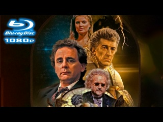
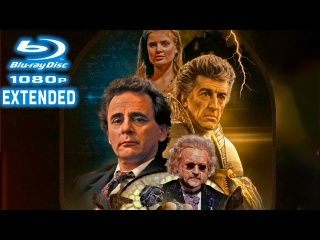
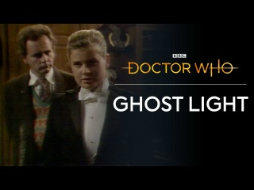
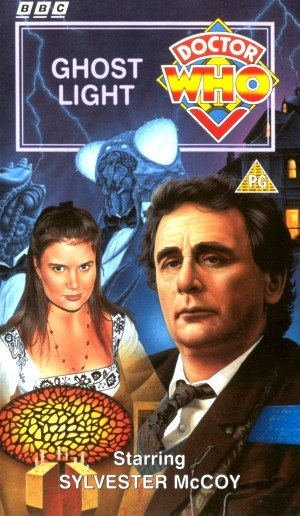
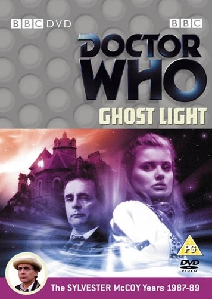
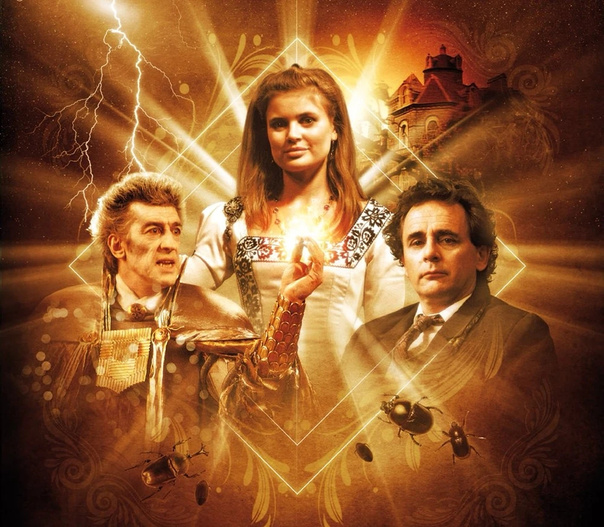
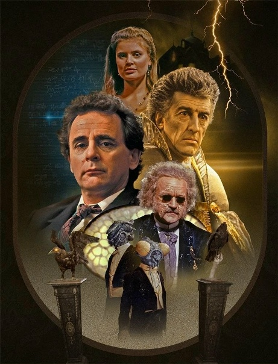
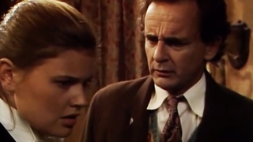

Субтитры: Русские и Английские |  |
|---|---|
Субтитры: только Английские |  |
Субтитры: только Английские |  |
Ghost Light
Дата выхода: 4-18 октября 1989
Формат: 3 эпизода по 25 мин.
Доктор привозит Эйс в особняк Гэбриэл Чейс в Перивейле — тот самый дом, который она сожгла в 1983 году, почувствовав в нём зло. Но сейчас 1883-й, и в доме царит странный порядок: дворецкий — неандерталец по имени Нимрод, слуги вооружены, а таинственный Джозайя Сэмюел Смит собрал вокруг себя причудливую компанию — от безумного исследователя Редверса Фенн-Купера до преподобного Мэттьюса, яростного противника теории эволюции. Доктор хочет разобраться, что за зло ощущала Эйс, а заодно помочь ей столкнуться с прошлым лицом к лицу.
Сценарий Марка Платта — его первая работа для «Доктора Кто», позже он станет одним из главных авторов аудиопостановок Big Finish. Последняя снятая серия классического сериала, хотя показана второй в сезоне. Серия получила репутацию одной из самых запутанных в истории «Доктора Кто» — зрители жаловались, что сюжет трудно понять даже после повторного просмотра.
 VHS - май 1994 |  DVD - 20 сентября 2004 |  Blu-ray - 27 января 2020 * Версия в нашей группе |
|---|


